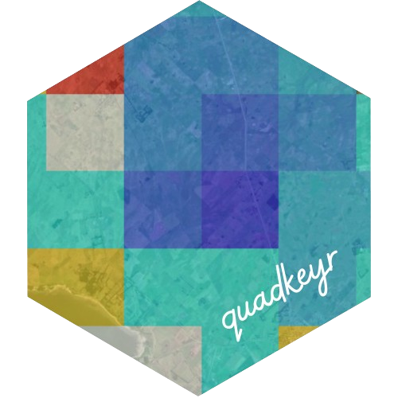

QuadKey Visualization App
Florencia D’Andrea
2024-03-21
Source:vignettes/quadkey_visualization_app.Rmd
quadkey_visualization_app.RmdPlease, visit the README for general information about this package
To easily visualize:
- The QuadKey location based on provided geographic coordinates, and
- The grid for the area delimited by two pairs of geographic coordinates, you can utilize the internal app provided by
quadkeyr.